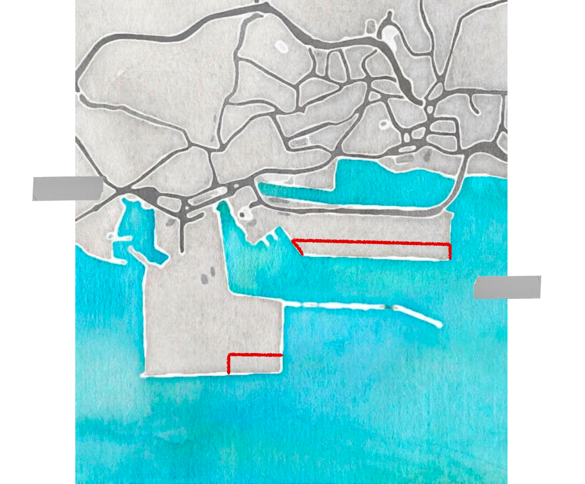

EL PUERTO BAHIA DE ALGECIRAS
Un espacio de lucha sindical
INTRODUCCIÓN
El puerto de Algeciras es el principal puerto de España y uno de los más importantes de Europa. En 2017, los trabajadores y las trabajadoras del puerto se enfrentaron a un intento de reforma laboral que amenazaba la estabilidad de sus empleos. Gracias a la lucha sindical, lograron proteger sus derechos y mantener la calidad del empleo en el sector.



2024 | Reclamación sindical por la unificación
de convenios en el sector del practicaje
de convenios en el sector del practicaje
 2024 | Te sientes trabajador/a del puerto, no de tu empresa
2017 | Lucha contra la deslocalización en APM Terminals
2025 | Huelga en la estiba contra la aplicación del Tratado de emisiones de la UE
2024 | Lucha por el convenio y la sobrecarga de trabajo
2024 | Te sientes trabajador/a del puerto, no de tu empresa
2017 | Lucha contra la deslocalización en APM Terminals
2025 | Huelga en la estiba contra la aplicación del Tratado de emisiones de la UE
2024 | Lucha por el convenio y la sobrecarga de trabajo en el Puesto de Control Fronterizo
2024 | El amarre era la gaviota del puerto
2016 | Todos en el mismo bote
2024 | No hay dinero para los convenios
2024 | No hay dinero para los convenios
2017 | Culminación de las negociaciones del Convenio Agencias Marítimas Consignatarias de Buques S. A. APEMAR
2017 | Culminación de las negociaciones del Convenio Agencias Marítimas Consignatarias de Buques S. A. APEMAR
2017 | Culminación de las negociaciones del Convenio Agencias Marítimas Consignatarias de Buques S. A. APEMAR
2021 | El salario es un derecho, no un privilegio
2023 | Unión de las personas trabajadoras portuarias en su rechazo a los despidos en la Agencia Marítima Partida Logistics
2021 | Sobre los gestos de solidaridad más allá del puerto
 2024 | 'Presentan sus pliegos y luego no hay dinero para los convenios' Las reivindicaciones
2024 | 'Presentan sus pliegos y luego no hay dinero para los convenios' Las reivindicaciones